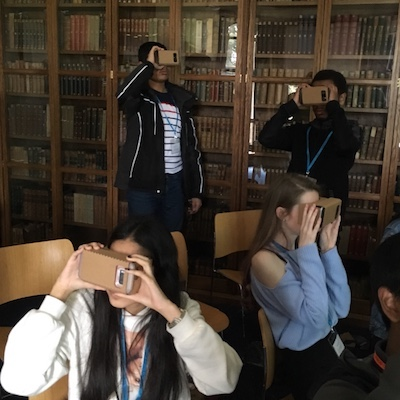

Teaching
We are currently working on the curriculum content for the trip. This page lists one-off events that we do and makes any teaching materials available. Please get in touch if you would like to use them or need help with your own virtual field trip design.
Pembroke College Year 12 Masterclass
On Saturday 23rd March 2019, Gemma Gordon and Anil Madhavapeddy introduced the LABScI Imagine Virtual Field Trip to a group of Year 12 students who visited Pembroke College Cambridge as part of the admissions masterclass program. Their visit included a tour of the College, and we presented the Imagine project as a real-world application of Computer Science for them to experience interactively.

After introducing the basic science behind 360 images and Virtual Reality devices, we handed out a Google Cardboard V1 viewer to each student for assembly. Our 2018 visit to the Grand Staircase has provided a wealth of media, and we chose the geology of the Colorado Plateau as our context.
In line with the aims of the Imagine project, we asked the students to visualise a scenario where they were learning the basics of geological deposition, uplift and erosion, but where they couldn’t attend school as normal, and they couldn’t physically go on a field trip. We discussed how learning could be enhanced with the use of VR. Starting with a standard cross-sectional image of the Grand Staircase from a textbook, we moved onto standard 2D images of the National Parks along the route, and then using the Cardboard viewers, the students looked at 6 different 360 VR images, and the 360 VR video footage of Spooky Gulch, highlighting these geologic processes.
The students had tons of ideas of how to further extend the technology to support a full STEM curricula, as well as different subject areas, ranging from sports coverage and training to space travel!
Teaching Material
- The PDF slides are available on Speakerdeck. Please get in touch if you want the original Keynote.
- We also uploaded a virtual reality "tour" as a set of static photos to guide the students through the various geological processes.
- The Spooky Gulch VR video was then the final longer video guide to a slot canyon.
As next steps, we are implementing a web platform that will let teachers have more control over the videos. While the students all had fun in the class, it was difficult to keep everyone coordinated and pointing at the same image. It would also have been useful to get some feedback about which image they were seeing, since some of the kids' phones did not have reliable WebVR support and so head tracking was unreliable.